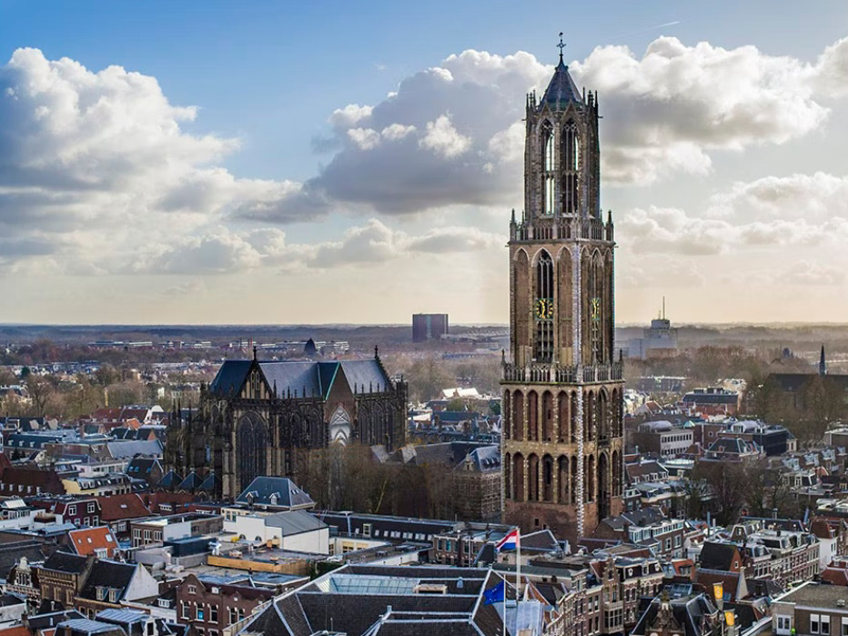

De Domtoren van Utrecht, een icoon dat hoog boven de stad uitsteekt, vertegenwoordigt eeuwen van geschiedenis en architectonisch meesterschap. Met zijn imposante gotische structuur, opgetrokken uit rode bakstenen, is de Domtoren een symbool van de grootsheid en de rijke cultuur van Utrecht, Nederland. De toren, begonnen in 1254 en voltooid na meer dan zestig jaar bouwen, rijst op tot een hoogte van ongeveer 112 meter en telt 465 treden die moedige bezoekers naar het adembenemende uitzicht over de stad leiden. De klokken van de Domtoren, met hun melodieuze carillon van vijftig klokken, weerklinken regelmatig over de stad en vormen een geliefd onderdeel van het culturele landschap van Utrecht. Hoewel de toren ooit deel uitmaakte van de majestueuze Domkerk, werd een deel ervan verwoest door een verwoestende tornado in 1674, waardoor de toren nu als een onafhankelijk symbool van kracht en veerkracht staat.
